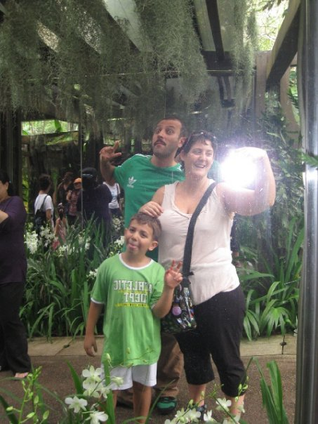
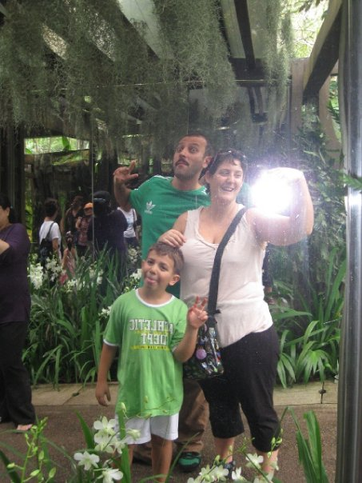

About This Work
Data Landscapes transforms quantified personal and environmental information into abstract visual compositions reminiscent of landscape paintings. The series uses datasets ranging from personal health metrics to climate data, processing them through custom visualization algorithms that emphasize aesthetic beauty over analytical clarity.
Each piece represents a different temporal scale - from daily personal rhythms to geological climate patterns. The work critiques our relationship with data by presenting it in a contemplative, artistic context rather than as utilitarian information.
Colors, forms, and textures emerge from the underlying data patterns, creating landscapes that are both abstract and deeply rooted in lived experience.